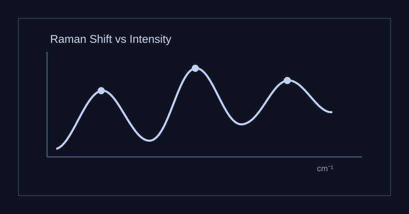
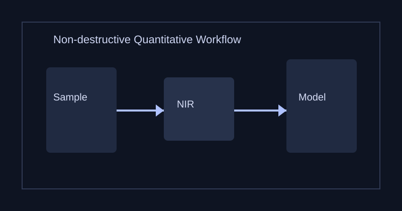
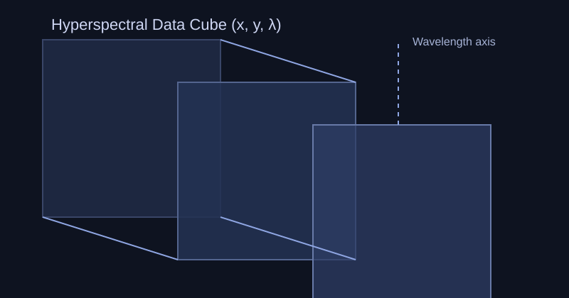

01
Raman & SERS
레이저 산란 스펙트럼으로 분자의 진동 모드를 읽어 물질을 식별합니다. SERS 기판을 이용하면 미량 성분(저농도 바이오마커, 대사체)의 신호를 증폭해 검출한계를 낮출 수 있습니다.
Hanyang University · Department of Chemistry
ASL은 분광학 기반 정량·정성 분석법을 개발하여 바이오, 재료, 환경 시료의 화학 정보를 재현성 있게 해석합니다. 실험 설계, 스펙트럼 처리, 통계 모델링을 통합해 실제 분석 문제를 해결합니다.
Laboratory Scope
연구실은 Raman/NIR/SERS/초분광 이미징을 기반으로 측정-전처리-모델링-검증의 전 과정을 수행합니다. 각 연구는 오차 요인 분석, 교차검증, 외부 검체 검증을 포함해 분석화학적 신뢰도를 확보하는 것을 목표로 합니다.
Research Focus

01
레이저 산란 스펙트럼으로 분자의 진동 모드를 읽어 물질을 식별합니다. SERS 기판을 이용하면 미량 성분(저농도 바이오마커, 대사체)의 신호를 증폭해 검출한계를 낮출 수 있습니다.

02
시료를 파괴하지 않고 짧은 시간 안에 조성 정보를 얻습니다. 농산물 품질, 원산지 판별, 공정 모니터링 등에서 다변량 회귀/분류 모델을 적용해 예측 정확도를 평가합니다.

03
픽셀마다 스펙트럼을 가지는 데이터 큐브를 구축해 공간 정보와 화학 정보를 동시에 해석합니다. 불균일 시료에서 위치별 조성 차이를 시각화하고 정량화할 수 있습니다.
04
PCA, PLS(-DA), SVM 등 화학계량학 기법을 사용해 고차원 스펙트럼을 해석합니다. 학부연구 단계에서는 전처리(정규화, baseline correction)와 모델 검증 지표의 의미를 이해하는 것이 핵심입니다.
Publications
Polymer 348 (2026) 173117
Chemical Engineering Journal 529 (2026)
ACS Omega 11(3), 3866-3874 (2026)
Spectrochimica Acta Part A 350 (2026) 127405
Microchemical Journal 220 (2026) 116661
Journal Name, Volume(Issue), pages (2025)
Journal Name, Volume(Issue), pages (2025)
Journal Name, Volume(Issue), pages (2025)
Journal Name, Volume(Issue), pages (2024)
Journal Name, Volume(Issue), pages (2024)
Members
Gallery
Lecture & Experiment